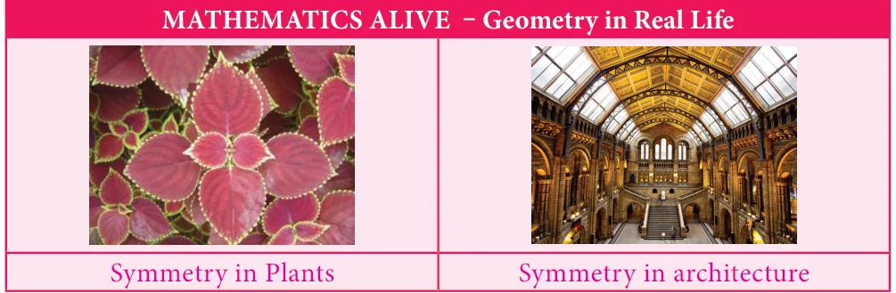

Symmetry is a fundamental part of geometry, nature, and shapes. It creates patterns that help us to recognize the beauty of the nature. An object exhibits symmetry if it looks the same after a transformation, such as reflection or rotation.
Symmetry is the underlying mathematical principle behind all patterns. Symmetry plays a significant role in the field of Arts, Sciecne and architecture. We learnt the concept of symmetry in class VI. Now we are going to learn symmetry through transformations. Transformations describe how geometric figures of the same shape are related to one another.
One of the most important applications of mathematics in daily life is the concept of geometric transformation. Students need to learn this concept so as to understand the nature and environment they live in. Transformation concept is very important to learn since it helps students to understand their situations in daily life.
This concept is a necessary mental tool to be able to analyse mathematical situations. It enables students to make up rules and patterns, make explorations, be more motivated to do better works and gain rich experiences by doing maths.
Rotation, translation, reflection concepts within geometrical transformations are used in daily life, architectural designs, art and technology. Above all an aesthetic sense of beauty is observed in objects due to symmetry. Let us see the three types of transformation namely translation, reflection and rotation in this chapter.
